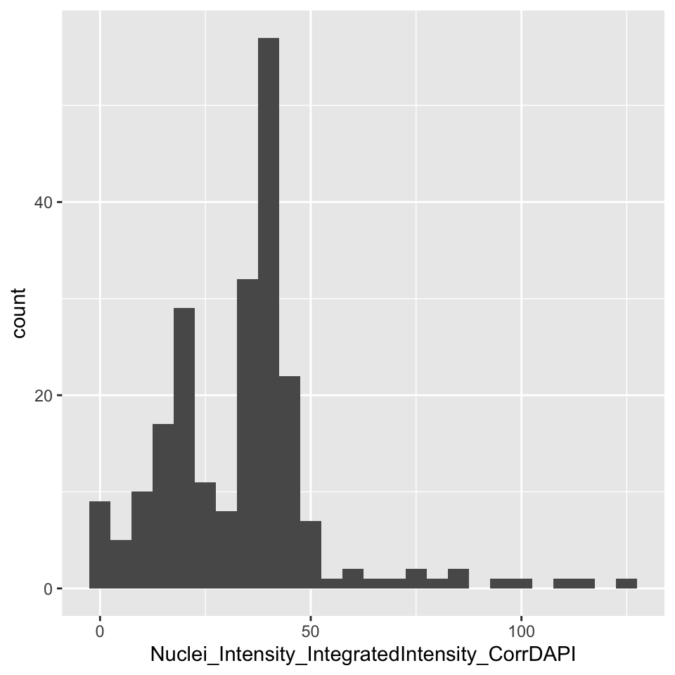
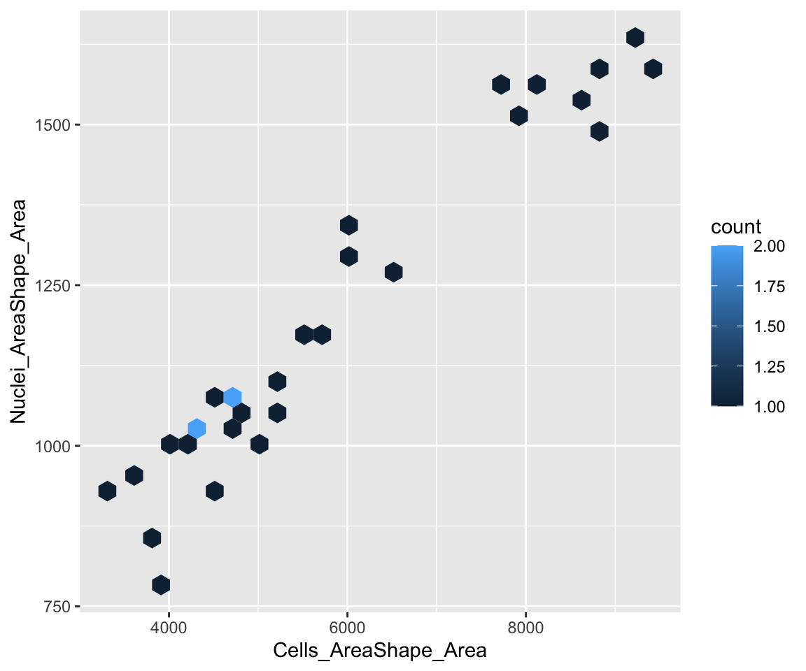

vignettes/single_cell_analysis.Rmd
single_cell_analysis.RmdThis vignette demonstrates how to summarize single-cell data from a morphological profiling experiment into treatment “profiles”. This dataset is from (Ljosa 2013) and is part of the BBBC021 dataset:
“This image set provides a basis for testing image-based profiling methods wrt. to their ability to predict the mechanisms of action of a compendium of drugs. The image set was collected using a typical set of morphological labels and uses a physiologically relevant p53-wildtype breast-cancer model system (MCF-7) and a mechanistically distinct set of targeted and cancer-relevant cytotoxic compounds that induces a broad range of gross and subtle phenotypes.”
The images were analyzed using CellProfiler. The CellProfiler pipelines and complete set of instructions to generate the data are provided in (Ljosa 2013).
Here, we analyze the single-cell data to perform a simple operation: summarizing them into per-well measurements by computing averages. This summarized data will later be used to predict mechanism-of-action of the compounds (see the predict_moa vignette.)
This vignette assumes that the single-cell data https://s3.amazonaws.com/imaging-platform-collaborator/2016_09_09_cytominer_workshop/ljosa_jbiomolscreen_2013.sqlite has been downloaded into ~/Downloads.
First, load the data! The data is contained in 4 tables named Image, Cytoplasm, Cells, and Nuclei. The code below joins these tables to create a single table named object.
backend <- file.path(Sys.getenv("HOME"), "Downloads", "ljosa_jbiomolscreen_2013.sqlite") db <- src_sqlite(path = backend) image <- tbl(src = db, "Image") nuclei <- tbl(src = db, "Nuclei") %>% select(-ObjectNumber) cells <- tbl(src = db, "Cells") %>% select(-ObjectNumber) cytoplasm <- tbl(src = db, "Cytoplasm") %>% select(-ObjectNumber) object <- tbl(src = db, "Cells") %>% inner_join(tbl(src = db, "Nuclei"), by = c("TableNumber", "ImageNumber", "Cells_Parent_Nuclei" = "Nuclei_Number_Object_Number")) %>% inner_join(tbl(src = db, "Cytoplasm"), by = c("TableNumber", "ImageNumber", "Cells_Number_Object_Number" = "Cytoplasm_Parent_Cells")) object %<>% inner_join(image, by = c("TableNumber", "ImageNumber"))
In this table, the measurement columns start with Nuclei_, Cells_, or Cytoplasm_.
variables <- colnames(object) %>% stringr::str_subset("^Nuclei_|^Cells_|^Cytoplasm_")
How many variables?
## [1] 514How many cells?
## Warning: The `add` argument of `group_by()` is deprecated as of dplyr 1.0.0.
## Please use the `.add` argument instead.
## This warning is displayed once every 8 hours.
## Call `lifecycle::last_warnings()` to see where this warning was generated.| n |
|---|
| 14821 |
Note that this is a smaller version of the BBBC021 dataset. The full dataset is here https://s3.amazonaws.com/imaging-platform-collaborator/2016_09_09_cytominer_workshop/ljosa_jbiomolscreen_2013.sqlite.
Before aggregating the data, let’s filter it down to one well and plot the histogram of a single feature:
object %>% filter(Image_Metadata_Plate == "Week1_22123" && Image_Metadata_Well == "E04") %>% select(Nuclei_Intensity_IntegratedIntensity_CorrDAPI) %>% collect() %>% { ggplot(., aes(Nuclei_Intensity_IntegratedIntensity_CorrDAPI)) + geom_histogram(binwidth = 5) }

Now let’s summarize the data by grouping by well and computing averages.
profiles <- cytominer::aggregate( population = object, variables = variables, strata = c("Image_Metadata_Plate", "Image_Metadata_Well"), operation = "mean" ) profiles %<>% collect() variables <- colnames(profiles) %>% str_subset("^Nuclei_|^Cells_|^Cytoplasm_")
How many wells?
| n |
|---|
| 30 |
The full version of this dataset is used in the vignette predict_moa to predict the mechanism-of-action of compounds.
Before we move on to that, let’s plot the relationship between a pair of variables from this summarized data
